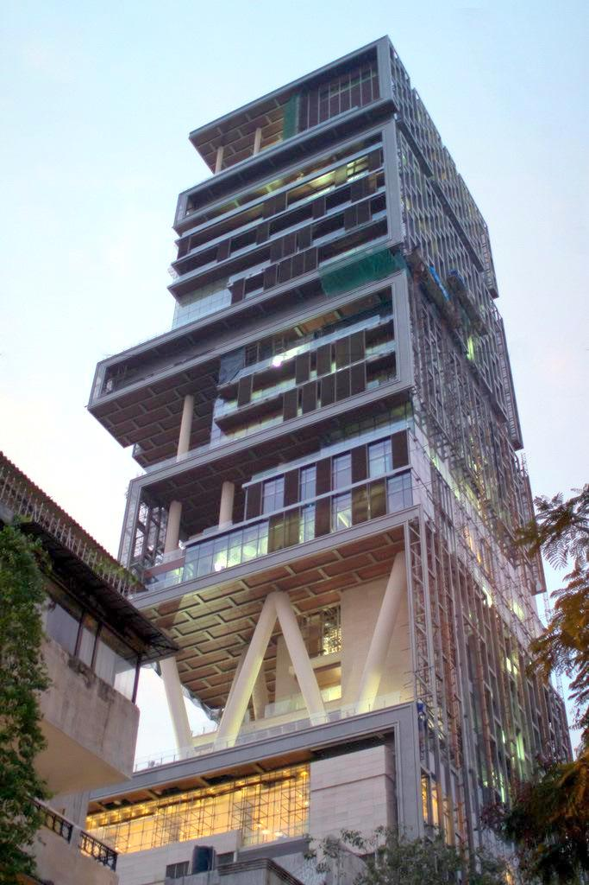

A school for independent thinkers.

With a commitment to free and open inquiry, our
scholars take an interdisciplinary approach to
research that spans arts to engineering, medicine to
education. Their work transforms the way we
understand the world, advancing fields of study, and
often creating new ones. Generating new knowledge for
the benefit of present and future generations, our
research has had an impact around the globe, leading
to such breakthroughs as discovering the link between
cancer and genetics, establishing revolutionary
theories of economics, and developing tools to
produce reliably excellent urban schooling.